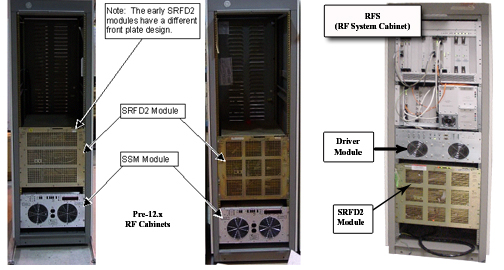

Operating Documentation
Direction 5440000, Rev# 5
Signa HDxt Service Methods
Module Version 3.0, Version Date 11/2/10
Operating Documentation |
This procedure describes how to calibrate the SRFD2 in a 1.5T system. The SRFD2 Cabinet contains the SRFD2 module and either an SSM or Driver Module, but does not contain gradient hardware or a PDU. The SRFD2 should come from the factory pre-calibrated and, ideally, initial calibration of the module in the field should not be needed. However, this procedure must be performed to confirm it is calibrated. (See Illustration 1 to confirm that the 1.5T SRFD2 cabinet pictured matches the cabinet to be checked and/or adjusted.)
Calibration is done to prevent faults and to make sure the SRFD2 is outputting the specified 16 kW of RF body power and 2 kW of RF head power. Adjustments may need to be made if any of the hardware in the RF chain was replaced (explained in Table 1), output levels decreased with age, or if any of the measurements taken during the check are not found to meet specifications.
The steps in Body and Head Maximum Power RF Output Check are done and, if within specification, no adjustments need to be made.
Next is the procedure for Head and Body Power Levels and the Gain Adjustments in the Body and Head RF Output Power Adjustments. (Refer to the flowchart in Table 1. References are made in the procedure, and provide additional information/directions to assist with accomplishing the RF power measurement task.)
| NOTE: | The Body and Head Gain pots are in series with each other. The Body Gain pot is first in the series. The Head Gain pot is factory set so that the head gain is 9 dB less (63 dBm) than the body gain (72 dBm). |
Illustration 1: 1.5T SRFD2 Cabinet

Table 1: Calibration Flow
| Order of Calibration | Note: Follow the column that is farthest left unless there is a problem. | |
| Body RF Maximum Power Output Check | ||
Did Body RF check OK? (No  ) ) | Body and Head RF Output Adjustments and Gain Pot Adjustment | |
| Head RF Max Power Output Check | ||
| Did Head RF check OK? (No ) | Head Gain Pot Adjustment | |
| All adjustments made and check OK? (No ) | General Troubleshooting | |
| TRM Blower Box Replacement | ||
| System Restoration | ||
General Reference Material: